主帖标题: 试测2021.1.4涨幅最大冠军股名称？
试测2021.1.4涨幅最大的板块？56个板块
公历起卦时间：2021年1月3日7时14分 (电脑自动)
干支：庚子年 戊子月 辛亥日 壬辰时 （日空：寅卯）
神煞：驿马－巳 桃花－子 日禄－酉 贵人－寅，午
震宫：震为雷 (六冲)
六神 伏神 本 卦
螣蛇 妻财庚戌土 ▅▅ ▅▅ 世
勾陈 官鬼庚申金 ▅▅ ▅▅
朱雀 子孙庚午火 ▅▅▅▅▅
青龙 妻财庚辰土 ▅▅ ▅▅ 应
玄武 兄弟庚寅木 ▅▅ ▅▅
白虎 父母庚子水 ▅▅▅▅▅
浙数文化在2022年 卦
时间: 2022-01-19 10时06分
干支: 辛丑年辛丑月壬申日 (旬空: 戌亥 )
震静卦
白虎 ▅▅ ▅▅ 妻财戌土 世
腾蛇 ▅▅ ▅▅ 官鬼申金
勾陈 ▅▅▅▅▅ 子孙午火
朱雀 ▅▅ ▅▅ 妻财辰土 应
青龙 ▅▅ ▅▅ 兄弟寅木
玄武 ▅▅▅▅▅ 父母子水
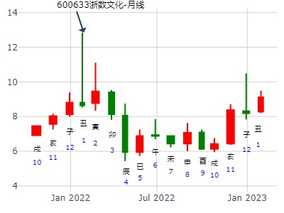
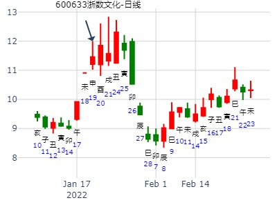
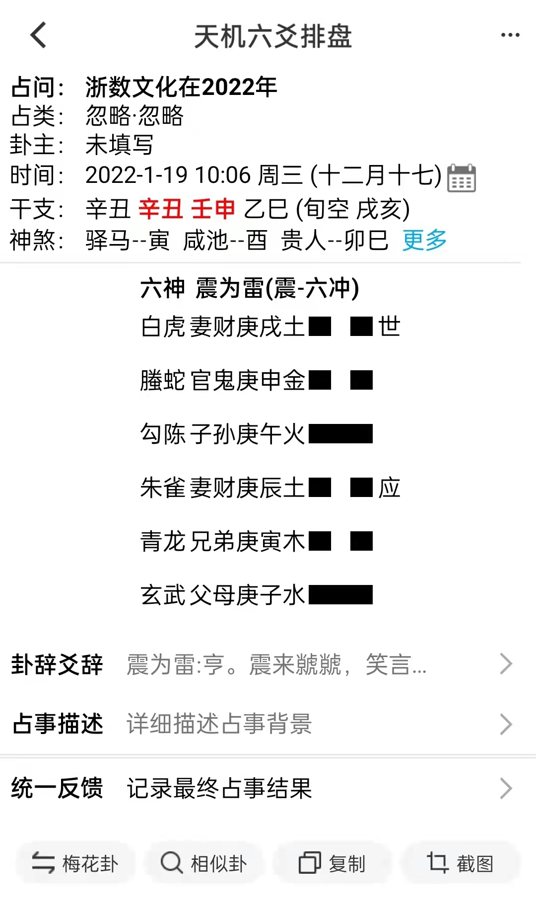
601992金隅股份到3月底。震为雷静卦
时间: 2017-02-22 8时31分
干支: 丁酉年壬寅月庚辰日庚辰时 (旬空: 申酉 )
震静卦
腾蛇 ▅▅ ▅▅ 妻财戌土 世
勾陈 ▅▅ ▅▅ 官鬼申金
朱雀 ▅▅▅▅▅ 子孙午火
青龙 ▅▅ ▅▅ 妻财辰土 应
玄武 ▅▅ ▅▅ 兄弟寅木
白虎 ▅▅▅▅▅ 父母子水
短线辰日即最高点，中线到了辰月又涨了一个月。
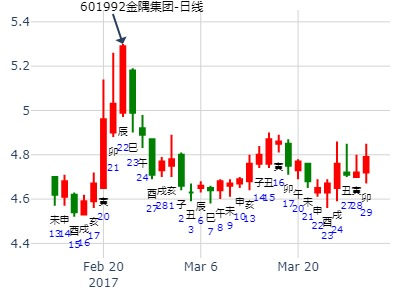
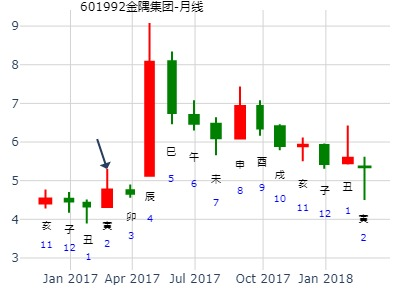
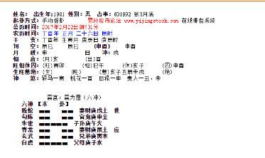
风生水起 占事：宗申动力16.3.28-17.3.27
起卦方式：手动摇卦
时 间: 2016-03-28
干 支：丙申年 辛卯月 己酉日 戊辰时
旬 空：辰巳 午未 寅卯 戌亥
震宫：震为雷（六冲）
六神 【本 卦】
勾陈 ▄▄ ▄▄ 妻财庚戌土 世
朱雀 ▄▄ ▄▄ 官鬼庚申金
青龙 ▄▄▄▄▄ 子孙庚午火
玄武 ▄▄ ▄▄ 妻财庚辰土 应
白虎 ▄▄ ▄▄ 兄弟庚寅木
螣蛇 ▄▄▄▄▄ 父母庚子水
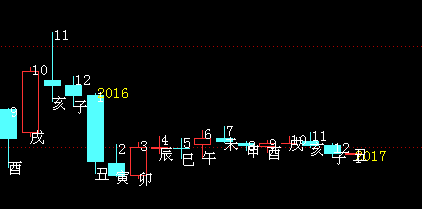
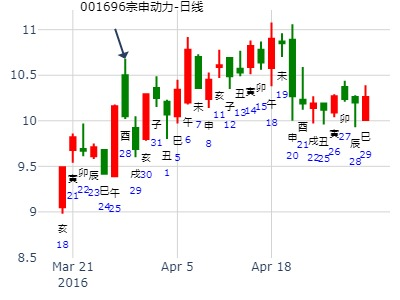
震静卦，问600196复星医药清明前涨跌？.md王晖
2022年3月22日14时13分 (在线摇卦)
干支：壬寅年 癸卯月 甲戌日 辛未时 （日空：申酉）
震宫：震为雷 (六冲)
六神 伏神 本 卦
玄武 妻财庚戌土 ▅▅ ▅▅ 世
白虎 官鬼庚申金 ▅▅ ▅▅
螣蛇 子孙庚午火 ▅▅▅▅▅
勾陈 妻财庚辰土 ▅▅ ▅▅ 应
朱雀 兄弟庚寅木 ▅▅ ▅▅
青龙 父母庚子水 ▅▅▅▅▅
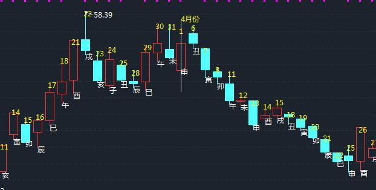
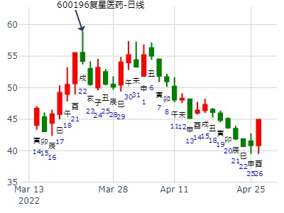
主帖标题: 下周几个看好股票涨跌。
期货第一股，重组概念，15年没有大涨。
占事：000996中国中期下周2345涨跌
排卦：元亨利贞网六爻在线排盘系统 http://www.china95.net
公历起卦时间：2016年4月30日10时42分 (电脑自动)
干支：丙申年 壬辰月 壬午日 乙巳时 日空：申酉
震宫：震为雷 (六冲)
六神 伏神 本 卦
白虎 妻财庚戌土 ▅▅ ▅▅ 世
腾蛇 官鬼庚申金 ▅▅ ▅▅
勾陈 子孙庚午火 ▅▅▅▅▅
朱雀 妻财庚辰土 ▅▅ ▅▅ 应
青龙 兄弟庚寅木 ▅▅ ▅▅
玄武 父母庚子水 ▅▅▅▅▅
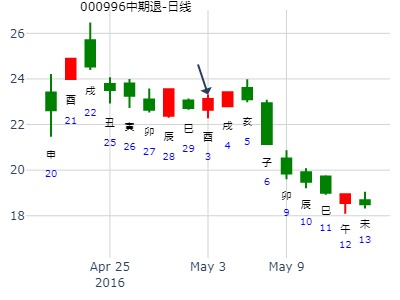
震为雷静卦，2009.5.4－5.8，大盘周卦，大阳线
公历起卦时间：2009年5月2日11时0分 (手工指定)
干支：己丑年 戊辰月 丁未日 丙午时 （日空：寅卯）
震宫：震为雷 (六冲)
六神 伏神 本 卦
青龙 妻财庚戌土 ▅▅ ▅▅ 世
玄武 官鬼庚申金 ▅▅ ▅▅
白虎 子孙庚午火 ▅▅▅▅▅
腾蛇 妻财庚辰土 ▅▅ ▅▅ 应
勾陈 兄弟庚寅木 ▅▅ ▅▅
朱雀 父母庚子水 ▅▅▅▅▅
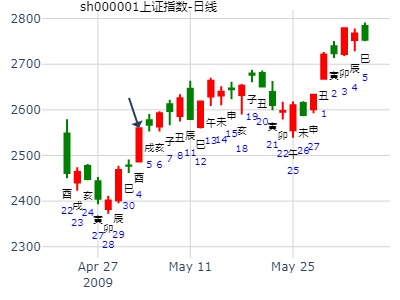
戌财月破逢冲，反而不涨？
辰月则应爻辰值月旺，世爻则月破，在戌日实破一天，在辰日则当月破又日破，故大跌。辰日对辰爻月日均旺，对戌爻是月日破，所以冲高回落，两极分化。可参考延华智能震卦。
震为雷静卦，2010.10.18－10.22，002178延华智能周卦，大阳线，暴涨（ferrari电脑）
公历起卦时间：2010年10月14日22时8分 (在线摇卦)
干支：庚寅年 丙戌月 丁酉日 辛亥时 （日空：辰巳）
震宫：震为雷 (六冲)
六神 伏神 本 卦
青龙 妻财庚戌土 ▅▅ ▅▅ 世
玄武 官鬼庚申金 ▅▅ ▅▅
白虎 子孙庚午火 ▅▅▅▅▅
腾蛇 妻财庚辰土 ▅▅ ▅▅ 应
勾陈 兄弟庚寅木 ▅▅ ▅▅
朱雀 父母庚子水 ▅▅▅▅▅
定海神针 23:39:49
后两个都是戌月，妻财值月暴涨
世爻在戌月戌日月旺日旺，又临六爻，是否太旺而跌？
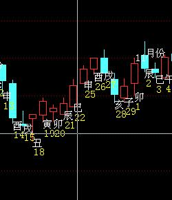
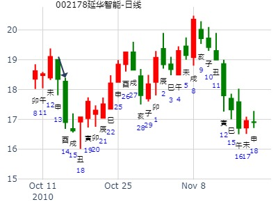
震为雷静卦，2010.5.31－6.4，沪深300周卦，中阴线(笑一)
起卦方式：手摇卦 龙隐网([url]www.longyin.net)[/url]六爻线上排盘系统
公历时间：2010年5月30日17时54分
干支：庚寅年 辛巳月 庚辰日 乙酉时
旬空：午未 申酉 申酉 午未
震宫：震为雷（六冲）
六神 【本 卦】
螣蛇 ▄▄ ▄▄ 妻财庚戌土 世
勾陈 ▄▄ ▄▄ 官鬼庚申金
朱雀 ▄▄▄▄▄ 子孙庚午火
青龙 ▄▄ ▄▄ 妻财庚辰土 应
玄武 ▄▄ ▄▄ 兄弟庚寅木
白虎 ▄▄▄▄▄ 父母庚子水
接近横盘。 不懂。世爻日破
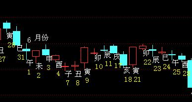
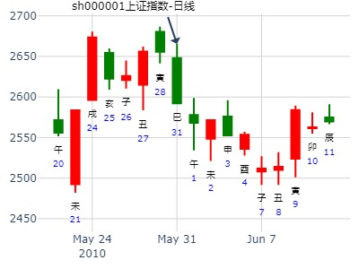
主帖标题: 5.21是涨？跌？幅度如何？（8）
300491：
震宫：震为雷 (六冲)
六神 伏神 本 卦
朱雀 妻财庚戌土 ▅▅ ▅▅ 世
青龙 官鬼庚申金 ▅▅ ▅▅
玄武 子孙庚午火 ▅▅▅▅▅
白虎 妻财庚辰土 ▅▅ ▅▅ 应
螣蛇 兄弟庚寅木 ▅▅ ▅▅
勾陈 父母庚子水 ▅▅▅▅▅
收阴，福度中 （或许不准，参考自负）
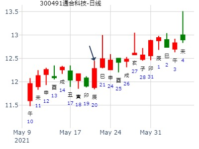
占事：2014年7月大盘涨跌？
公历起卦时间：2014年6月30日15时23分 (手工指定)
干支：甲午年 庚午月 壬申日 戊申时 （日空：戌亥）
神煞：驿马－寅 桃花－酉 日禄－亥 贵人－卯，巳
震宫：震为雷 (六冲)
六神 伏神 本 卦
白虎 妻财庚戌土 ▅▅ ▅▅ 世
腾蛇 官鬼庚申金 ▅▅ ▅▅
勾陈 子孙庚午火 ▅▅▅▅▅
朱雀 妻财庚辰土 ▅▅ ▅▅ 应
青龙 兄弟庚寅木 ▅▅ ▅▅
玄武 父母庚子水 ▅▅▅▅▅
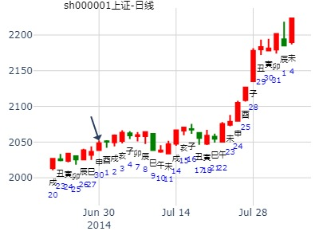
占事：002264新华都明天涨跌
公历起卦时间：2016年6月5日17时37分 (电脑自动)
干支：丙申年 甲午月 戊午日 辛酉时 （日空：子丑）
震静卦
朱雀 ▅▅ ▅▅ 妻财戌土 世
青龙 ▅▅ ▅▅ 官鬼申金
玄武 ▅▅▅▅▅ 子孙午火
白虎 ▅▅ ▅▅ 妻财辰土 应
腾蛇 ▅▅ ▅▅ 兄弟寅木
勾陈 ▅▅▅▅▅ 父母子水
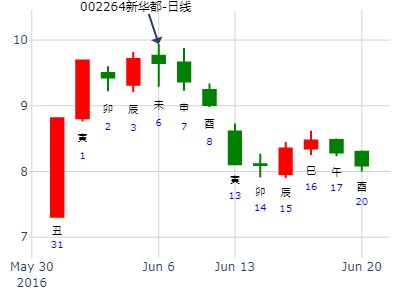
午月午日。
宇通客车午月走势。震为雷静卦.md
时间: 2022-06-22 12时17分
干支: 壬寅年丙午月丙午日甲午时 (旬空: 寅卯 )
震静卦
青龙 ▅▅ ▅▅ 妻财戌土 世
玄武 ▅▅ ▅▅ 官鬼申金
白虎 ▅▅▅▅▅ 子孙午火
腾蛇 ▅▅ ▅▅ 妻财辰土 应
勾陈 ▅▅ ▅▅ 兄弟寅木
朱雀 ▅▅▅▅▅ 父母子水
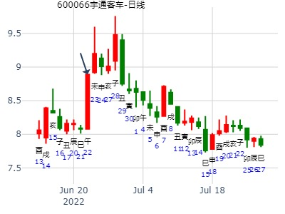
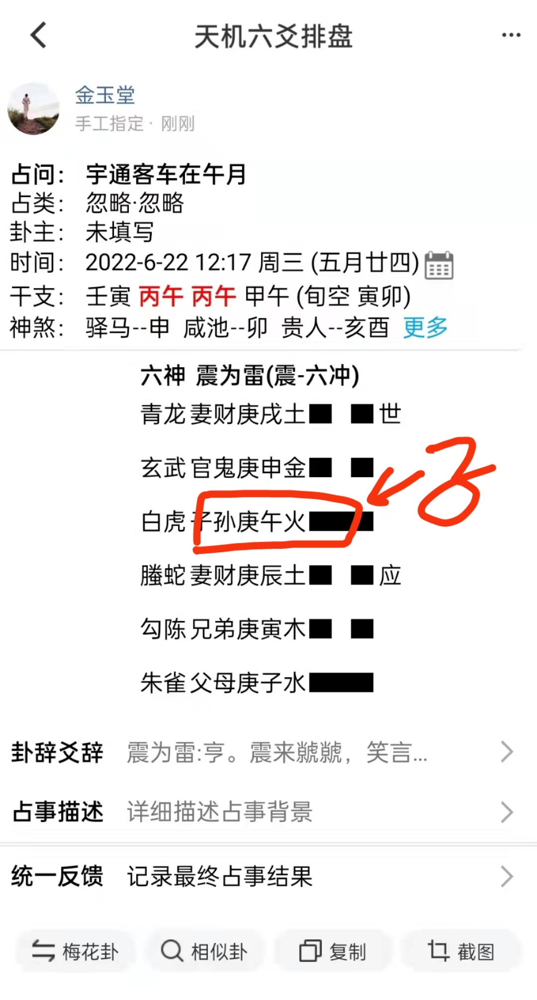
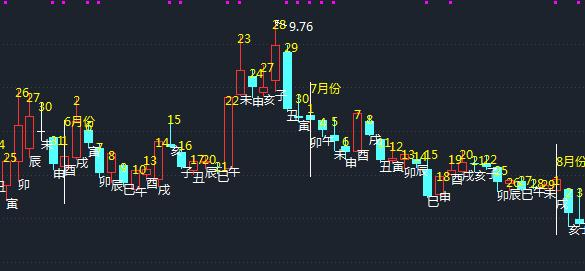
午月午日子孙特殊日月组合。太旺直接见顶。
占事：晋亿实业601002近期走势？
起卦方式：手动摇卦 易经股市论坛
公历时间：2014年7月1日10时57分
干 支：甲午年 庚午月 癸酉日 丁巳时 （戌亥空）
震宫：震为雷（六冲）
六神 【本 卦】
白虎 ▄▄ ▄▄ 妻财庚戌土 世
螣蛇 ▄▄ ▄▄ 官鬼庚申金
勾陈 ▄▄▄▄▄ 子孙庚午火
朱雀 ▄▄ ▄▄ 妻财庚辰土 应
青龙 ▄▄ ▄▄ 兄弟庚寅木
玄武 ▄▄▄▄▄ 父母庚子水
戌日冲高回落，似乎辰戌冲都有震荡之象，二个财爻中一个值日时，另一个则逢冲？
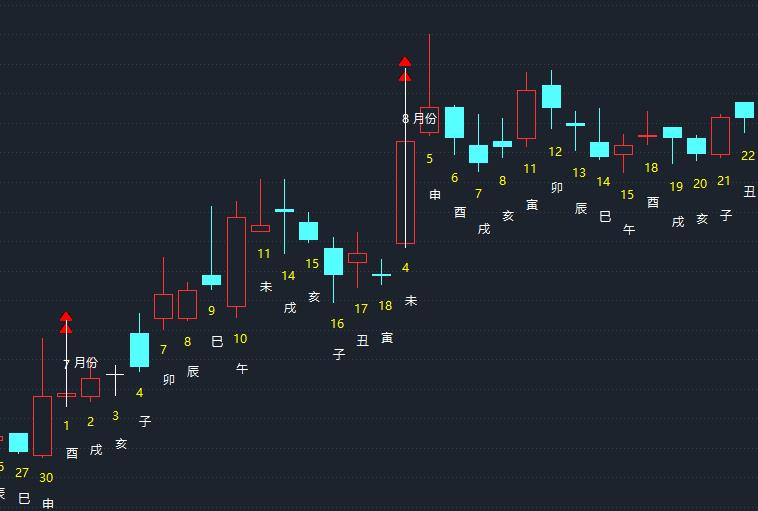
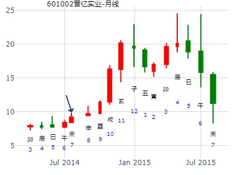
出生：没填 年 性别：男 占事：000791甘肃电投明天涨跌
公历起卦时间：2015年8月24日17时30分 (电脑自动)
干支：乙未年 甲申月 壬申日 己酉时 （日空：戌亥）
神煞：驿马－寅 桃花－酉 日禄－亥 贵人－卯，巳
震宫：震为雷 (六冲)
白虎 妻财庚戌土 ▅▅ ▅▅ 世
腾蛇 官鬼庚申金 ▅▅ ▅▅
勾陈 子孙庚午火 ▅▅▅▅▅
朱雀 妻财庚辰土 ▅▅ ▅▅ 应
青龙 兄弟庚寅木 ▅▅ ▅▅
玄武 父母庚子水 ▅▅▅▅▅
申月申日，官鬼太旺泄财。
测002797第一创业在2017年8月-12月走势
出生：1979 年 性别：男
公历起卦时间：2017年8月12日11时19分 (手工指定)
干支：丁酉年 戊申月 辛未日 甲午时 （日空：戌亥）
震宫：震为雷 (六冲) 震宫：震为雷 (六冲)
六神 伏神 本 卦 变 卦
腾蛇 妻财庚戌土 ▅▅ ▅▅ 世 妻财庚戌土 ▅▅ ▅▅ 世
勾陈 官鬼庚申金 ▅▅ ▅▅ 官鬼庚申金 ▅▅ ▅▅
朱雀 子孙庚午火 ▅▅▅▅▅ 子孙庚午火 ▅▅▅▅▅
青龙 妻财庚辰土 ▅▅ ▅▅ 应 妻财庚辰土 ▅▅ ▅▅ 应
玄武 兄弟庚寅木 ▅▅ ▅▅ 兄弟庚寅木 ▅▅ ▅▅
白虎 父母庚子水 ▅▅▅▅▅ 父母庚子水 ▅▅▅▅▅
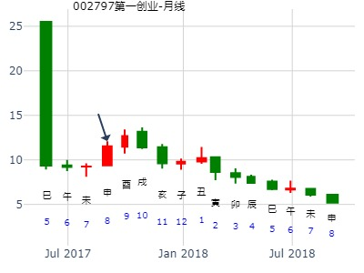
主帖标题: 2021年9月大盘涨跌卦
占事：2021年9月大盘涨跌
公历起卦时间：2021年8月31日16时39分 (手工指定)
干支：辛丑年 丙申月 辛亥日 丙申时 （日空：寅卯）
神煞：驿马－巳 桃花－子 日禄－酉 贵人－寅，午
震宫：震为雷 (六冲)
六神 伏神 本 卦
螣蛇 妻财庚戌土 ▅▅ ▅▅ 世
勾陈 官鬼庚申金 ▅▅ ▅▅
朱雀 子孙庚午火 ▅▅▅▅▅
青龙 妻财庚辰土 ▅▅ ▅▅ 应
玄武 兄弟庚寅木 ▅▅ ▅▅
白虎 父母庚子水 ▅▅▅▅▅
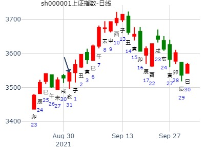
主帖标题: 002728下周走势
求测人：某人，男，庚申(1980年)，手工指定(起卦方式)
占问事宜：要问的事情
公历：2016年9月2日0时0分，星期五。
干支：丙申年 丙申月 丁亥日 庚子时 (卦身：巳)
主变卦 震为雷(震宫) [空亡:午、未]
青龙 ▅▅ ▅▅ 妻财庚戌土 世
玄武 ▅▅ ▅▅ 官鬼庚申金
白虎 ▅▅▅▅▅ 子孙庚午火
螣蛇 ▅▅ ▅▅ 妻财庚辰土 应
勾陈 ▅▅ ▅▅ 兄弟庚寅木
朱雀 ▅▅▅▅▅ 父母庚子水
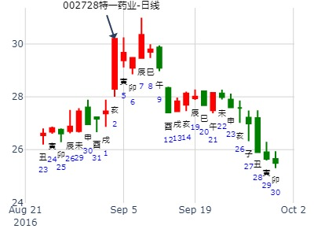
姓名：入定观 出生年: 性别：男
占事：9.5-9.9创业板指数399006走势
起卦方式：手动摇卦
公历时间：2022年9月3日9时19分
干 支：壬寅年 戊申月 己未日 己巳时
旬 空：辰巳 寅卯 子丑 戌亥
震宫：震为雷（六冲）
六神 【本 卦】
勾陈 ▄▄ ▄▄ 妻财庚戌土 世
朱雀 ▄▄ ▄▄ 官鬼庚申金
青龙 ▄▄▄▄▄ 子孙庚午火
玄武 ▄▄ ▄▄ 妻财庚辰土 应
白虎 ▄▄ ▄▄ 兄弟庚寅木
螣蛇 ▄▄▄▄▄ 父母庚子水

主帖标题: 第十二期１０月１３日到１７日预测上证指数比赛
公历时间：2008年10月13日9时30分 星期一
农历时间：戊子年九月十五巳时
干支：戊子年 壬戌月 丙戌日 癸巳时 (旬空：午未)
神煞：驿马—申 桃花—卯 日禄—巳 贵人—酉，亥
震宫：震为雷（六冲）
青龙 ▅▅ ▅▅ 妻财庚戌土 世
玄武 ▅▅ ▅▅ 官鬼庚申金
白虎 ▅▅▅▅▅ 子孙庚午火
螣蛇 ▅▅ ▅▅ 妻财庚辰土 应
勾陈 ▅▅ ▅▅ 兄弟庚寅木
朱雀 ▅▅▅▅▅ 父母庚子水
这是大盘日Ｋ线演化的静卦！

震为雷，2010.10.11－10.15，IFL0股指期货连续走势，大阳线，暴涨（ferrari电脑）
公历起卦时间：2010年10月11日9时19分 (在线摇卦)
干支：庚寅年 丙戌月 甲午日 己巳时 （日空：辰巳）
震宫：震为雷 (六冲)
六神 伏神 本 卦
玄武 妻财庚戌土 ▅▅ ▅▅ 世
白虎 官鬼庚申金 ▅▅ ▅▅
腾蛇 子孙庚午火 ▅▅▅▅▅
勾陈 妻财庚辰土 ▅▅ ▅▅ 应
朱雀 兄弟庚寅木 ▅▅ ▅▅
青龙 父母庚子水 ▅▅▅▅▅
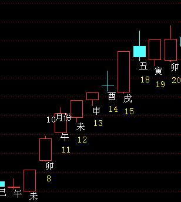
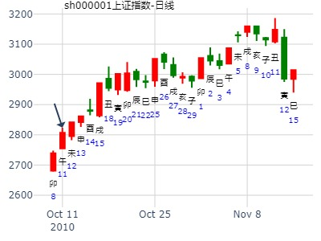
参看晋亿实业的震为雷静卦，戌日出空，则冲辰爻，故震荡 。
而此处是戌日冲了空的辰爻。冲实与冲暗动还是有区别。
此卦须参考延华智能的周卦，同是戌月，戌日暴涨，因为辰空，冲实了辰土，但不算暗动。你好我好大家好。跟冲非旬空的辰不一样，那是月破日破太烂了。
震为雷，2010.10.18－10.22，002178延华智能周卦，大阳线，暴涨（ferrari电脑）
公历起卦时间：2010年10月14日22时8分 (在线摇卦)
干支：庚寅年 丙戌月 丁酉日 辛亥时 （日空：辰巳）
神煞：驿马－亥 桃花－午 日禄－午 贵人－酉，亥
震宫：震为雷 (六冲) 震宫：震为雷 (六冲)
六神 伏神 本 卦 变 卦
青龙 妻财庚戌土 ▅▅ ▅▅ 世 妻财庚戌土 ▅▅ ▅▅ 世
玄武 官鬼庚申金 ▅▅ ▅▅ 官鬼庚申金 ▅▅ ▅▅
白虎 子孙庚午火 ▅▅▅▅▅ 子孙庚午火 ▅▅▅▅▅
腾蛇 妻财庚辰土 ▅▅ ▅▅ 应 妻财庚辰土 ▅▅ ▅▅ 应
勾陈 兄弟庚寅木 ▅▅ ▅▅ 兄弟庚寅木 ▅▅ ▅▅
朱雀 父母庚子水 ▅▅▅▅▅ 父母庚子水 ▅▅▅▅▅
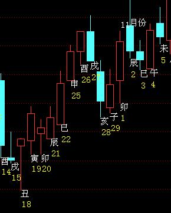
如果论动态旬空的话，则戌日己是寅卯空了，
则对辰土而言，是月破加日破，而戌土是反向月旺日旺，有人连夜赶考，有人告老还乡，多空大分歧，冲高大回落。
震为雷静卦，2011.10.31－11.4，大盘周卦（再人）
起卦时间：2011年10月30日08时55分起卦方式：手摇起卦
立冬：2011年11月08日02时52分
干支：辛卯年 戊戌月 戊午日 丙辰时
旬空：午未 辰巳 子丑 子丑
震宫：震为雷（六冲）
【本 卦】
朱雀 ▅▅ ▅▅ 妻财庚戌土 世
青龙 ▅▅ ▅▅ 官鬼庚申金
玄武 ▅▅▅▅▅ 子孙庚午火
白虎 ▅▅ ▅▅ 妻财庚辰土 应
滕蛇 ▅▅ ▅▅ 兄弟庚寅木
勾陈 ▅▅▅▅▅ 父母庚子水
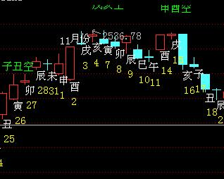
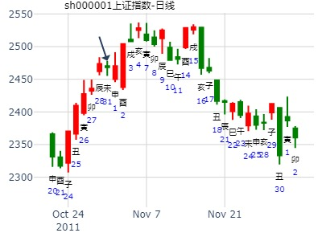
天同测：本中气内，科威尔走势如何？
时间: 2021-10-24 11时1分
干支: 辛丑年戊戌月乙巳日 (旬空: 寅卯 )
震静卦
玄武 ▅▅ ▅▅ 妻财戌土 世
白虎 ▅▅ ▅▅ 官鬼申金
腾蛇 ▅▅▅▅▅ 子孙午火
勾陈 ▅▅ ▅▅ 妻财辰土 应
朱雀 ▅▅ ▅▅ 兄弟寅木
青龙 ▅▅▅▅▅ 父母子水
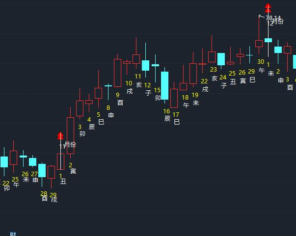
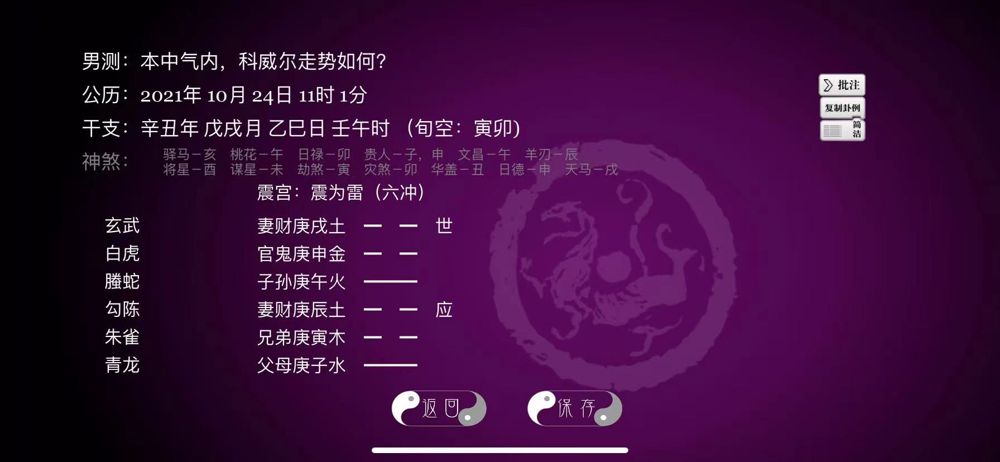
下周大盘安全否？-王在线
时间: 2024-10-04
干支: 甲辰年癸酉月辛丑日 (旬空: 辰巳 )
震静卦
腾蛇 ▅▅ ▅▅ 妻财戌土 世
勾陈 ▅▅ ▅▅ 官鬼申金
朱雀 ▅▅▅▅▅ 子孙午火
青龙 ▅▅ ▅▅ 妻财辰土 应
玄武 ▅▅ ▅▅ 兄弟寅木
白虎 ▅▅▅▅▅ 父母子水
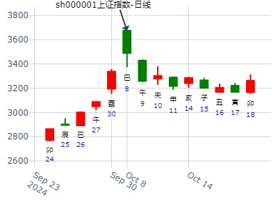
出生：没填 年 性别：男 占事：000017深中华A明天涨跌
公历起卦时间：2014年11月5日17时36分 (电脑自动)
干支：甲午年 甲戌月 庚辰日 乙酉时 （日空：申酉）
震宫：震为雷 (六冲)
六神 伏神 本 卦
腾蛇 妻财庚戌土 ▅▅ ▅▅ 世
勾陈 官鬼庚申金 ▅▅ ▅▅
朱雀 子孙庚午火 ▅▅▅▅▅
青龙 妻财庚辰土 ▅▅ ▅▅ 应
玄武 兄弟庚寅木 ▅▅ ▅▅
白虎 父母庚子水 ▅▅▅▅▅
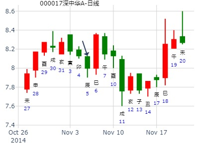
主帖标题: 泰达股份……3.37加仓，明天没有烟酒钱才怪呢
占本周内这股的涨跌？手摇卦 出生年:1981 性别：男
起卦方式：手动摇卦中国预测网
公历时间：2019年11月25日15时11分
干 支：己亥年 乙亥月 丙寅日 丙申时
旬 空：辰巳 申酉 戌亥 辰巳
震宫：震为雷（六冲）
六神 【本 卦】
青龙 ▄▄ ▄▄ 妻财庚戌土 世
玄武 ▄▄ ▄▄ 官鬼庚申金
白虎 ▄▄▄▄▄ 子孙庚午火
螣蛇 ▄▄ ▄▄ 妻财庚辰土 应
勾陈 ▄▄ ▄▄ 兄弟庚寅木
朱雀 ▄▄▄▄▄ 父母庚子水
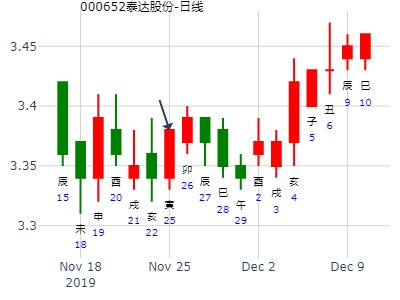
占事：12月12-16日大盘涨跌？
公历起卦时间：2011年12月9日15时39分 (手工指定)
干支：辛卯年 庚子月 戊戌日 庚申时 （日空：辰巳）
神煞：驿马－申 桃花－卯 日禄－巳 贵人－丑，未
震宫：震为雷 (六冲)
六神 伏神 本 卦
朱雀 妻财庚戌土 ▅▅ ▅▅ 世
青龙 官鬼庚申金 ▅▅ ▅▅
玄武 子孙庚午火 ▅▅▅▅▅
白虎 妻财庚辰土 ▅▅ ▅▅ 应
腾蛇 兄弟庚寅木 ▅▅ ▅▅
勾陈 父母庚子水 ▅▅▅▅▅
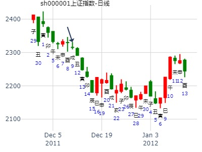
姓名：煊智 男 占事：东兴证券21-25日走势 起卦方式：手动摇卦
公历时间：2015年12月20日9时57分
干 支：乙未年 戊子月 庚午日 辛巳时
旬 空：辰巳 午未 (戌亥) 申酉
震宫：震为雷（六冲）
六神 【本 卦】
螣蛇 ▄▄ ▄▄ 妻财庚戌土 世
勾陈 ▄▄ ▄▄ 官鬼庚申金
朱雀 ▄▄▄▄▄ 子孙庚午火
青龙 ▄▄ ▄▄ 妻财庚辰土 应
玄武 ▄▄ ▄▄ 兄弟庚寅木
白虎 ▄▄▄▄▄ 父母庚子水
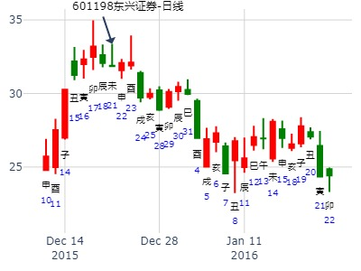
震静卦。凯淳股份1219-1223周走势-金玉堂
时间: 2022-12-16 15时59分
干支: 壬寅年壬子月癸卯日 (旬空: 辰巳 )
震静卦
白虎 ▅▅ ▅▅ 妻财戌土 世
腾蛇 ▅▅ ▅▅ 官鬼申金
勾陈 ▅▅▅▅▅ 子孙午火
朱雀 ▅▅ ▅▅ 妻财辰土 应
青龙 ▅▅ ▅▅ 兄弟寅木
玄武 ▅▅▅▅▅ 父母子水
子孙月破。午日月破却值班一天，高开，却套人见顶。六冲，稍纵即逝。
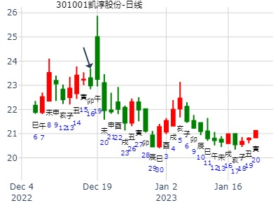
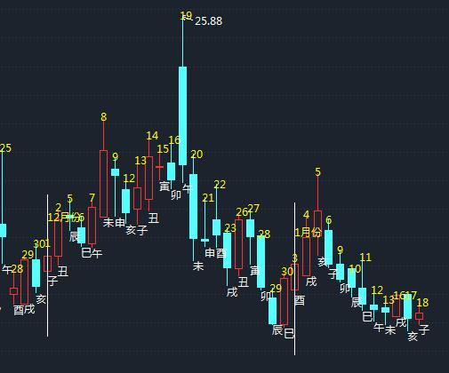
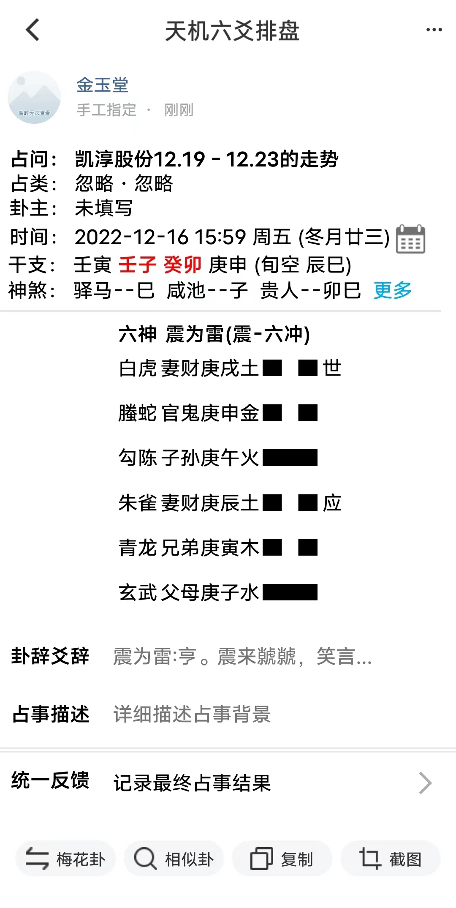